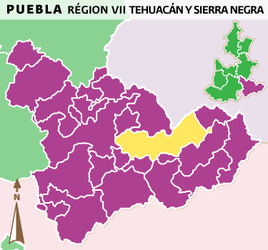

LEl municipio de Ajalpan se localiza en la parte sureste del estado de Puebla, sus coordenadas geográficas son los paralelos 18º 21´12"y 18º 30´00" de latitud norte, y los meridianos 96º 58´00"y 97º 18´18" de longitud occidental. Colinda: al norte con San Antonio Cañada y Vicente Guerrero, al sur con Zinacatepec, Coxcatlán y Zoquitlán, al este con Eloxochitlán y al oeste con Tehuacán y Altepexi.
